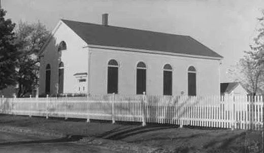
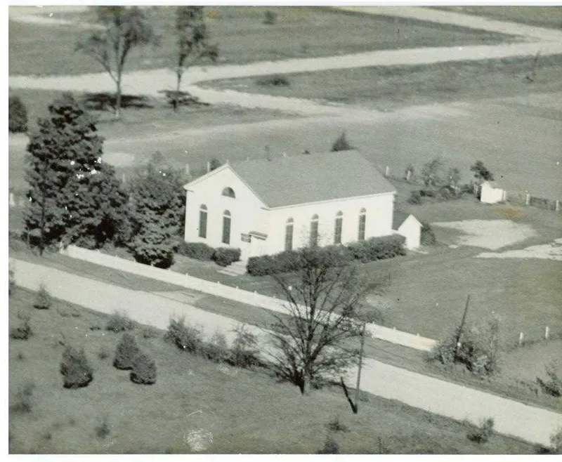
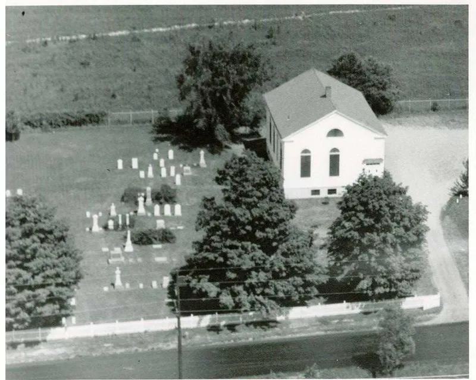
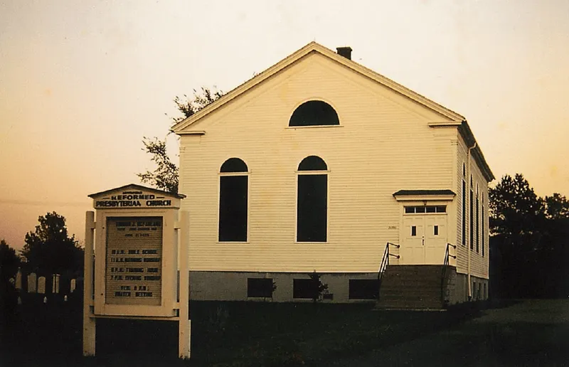
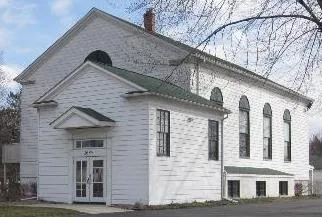

Our Founding
In 1834, three years before Michigan gained its statehood, the Southfield Reformed Presbyterian Church was organized as a congregation of the Western Presbytery of the Reformed Presbyterian Church of North America.
The first members were Scots-Irish settlers who had migrated from New York State with a firm conviction of the gospel of God and of the Mediatorial Kingship of Jesus Christ. These settlers cleared the dense Michigan forest and eked out a living off the land and helped to establish what would one day become the City of Southfield just northwest of Detroit.
In the early days, members were organized into “societies” or local Bible studies to promote the study of God’s word and to maintain fellowship and community through the week, and the body gathered for public worship when itinerant preachers were available.
David Stewart and Alexander McClung were elected as the first ruling elders. Pastor James Neill became the first pastor in 1842 and served in that capacity until 1851. The Lord has raised up a total of seventeen men to serve as pastor of the congregation, and they are listed with their years of service below.
In 1838, a building in which to worship was constructed at the current site. In 1852, David Stewart, the “founding father” of the congregation died and was the first person buried in the cemetery. In 1861, with the need for a larger and more permanent worship facility, Joseph Torrens constructed the current church building but died shortly afterward, without ever being able to worship in the building. A basement was dug and the building was moved back from Evergreen Road onto the basement in the 1950s, and the congregation continues to worship in this historic structure today. Additionally, in the 1940s, a parsonage was built north of the cemetery.
Church membership declined through much of the twentieth century, and some in the community, and perhaps even in the church itself, seemed to view the Southfield Reformed Presbyterian Church as a quaint and historic relic of religion that had become outdated with its simple gospel message of God’s sovereign grace and simple worship with a cappella Psalm singing. Written records indicate the expectation that the church would fade into the history books along with rural Southfield as the city blossomed into a commercial force in the mid-twentieth century. Today, Southfield is a robust city and the Lord has sustained His church which continues to worship on Evergreen Road just off of Interstate 696, one of Michigan’s busiest highways. King Jesus continues to reign and His church has not become outdated – it is more needed than ever before. God was pleased to grant growth to this historic congregation during the late 1990s and early 2000s, especially under the leadership of Pastors Ray Joseph and Ian Wise.
At present, we remain a small but energetic congregation blessed with a new generation of young men and women poised to continue in the “old paths” of their godly forefathers. We are excited to see what new chapters the Lord will add as His gospel is proclaimed from this place. Our congregation was the first church of any kind in Southfield, and we pray that He would enable us to continue proclaiming His gospel in Southfield and beyond until He finishes His work on earth. So, come, worship with us, and join us in this great calling!
The Building Through the Years





Our Pastors
Since our organization in 1834, the following men have served as our pastors.
- James Neill1842 to 1851
- J. S. T. MilliganNovember 11, 1853 to April 11, 1871
- James R. HillMay 10, 1872 to May 22, 1876
- Joseph McCrackenJune 15, 1878 to May 29, 1903
- Harvey Galbraith PattersonOctober 11, 1904 to May 27, 1910
- W. M. RobbDecember 5, 1911 to June 2, 1915
- Robert E. WillsonNovember 22, 1917 to January 20, 1919
- John Calvin Boyd FrenchJanuary 15, 1920 to December 7, 1921
- J. C. MathewsNovember 4, 1923 to October 1, 1947
- Harold ThompsonAugust 3, 1948 to July 30, 1961
- Armour McFarlandMay 18, 1962 to June 1964
- Donald WeilersbacherJune 1, 1965, to November 18, 1968
- John O. EdgarOctober 24, 1969 to February 28, 1979
- Charles SterrettJanuary 31, 1980 to December 31, 1985
- Raymond P. JosephFebruary 6, 1987 to January 11, 2002
- Ian D. WiseJanuary 11, 2002 to April 10, 2005
- James I. FarisNovember 17, 2006 to June 11, 2011
- Adam M. KuehnerMarch 30, 2012 to present
Written Histories
In addition to what we’ve summarized above, two fascinating histories of the congregation exist. Mary Thompson, granddaughter of founding elder David Stewart, wrote a history in 1915 as part of a campaign to raise support for the care of the church cemetery. A second history was written in 1973 by then-Pastor John O. Edgar as part of the congregation’s 140th anniversary celebration. These histories are available here:
- The Covenanter Church of Southfield and Its Early History related by Miss Mary E. Thompson
- Southfield Reformed Presbyterian Church from 1834-1973 by Dr. John O. Edgar.
The Underground Railroad
On Thursday, April 14, 2011, historian Rochelle E. Danquah gave a presentation at the Southfield Public Library that related to our congregation. She presented to the public, for the first time, research documenting that the Underground Railroad had been active in Southfield. Her research also outlined the involvement of Southfield Reformed Presbyterian Church in that historic effort primarily through the work of the church’s second pastor, J.S.T. Milligan. You can see some of Rochelle’s work by clicking here. See also our pastor, Adam Kuehner, and member, AJ Troutman, relay the part our church played in Metro Detroit's role in the Underground Railroad on Fox 2 Detroit.